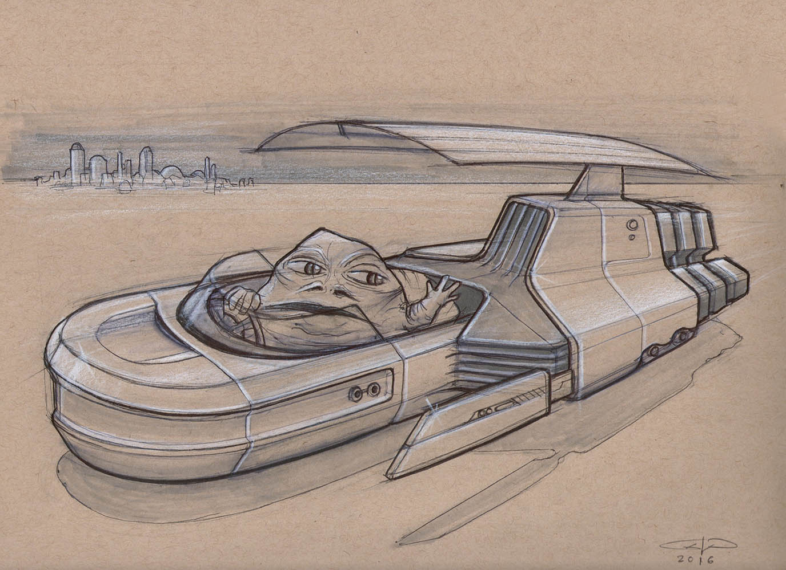
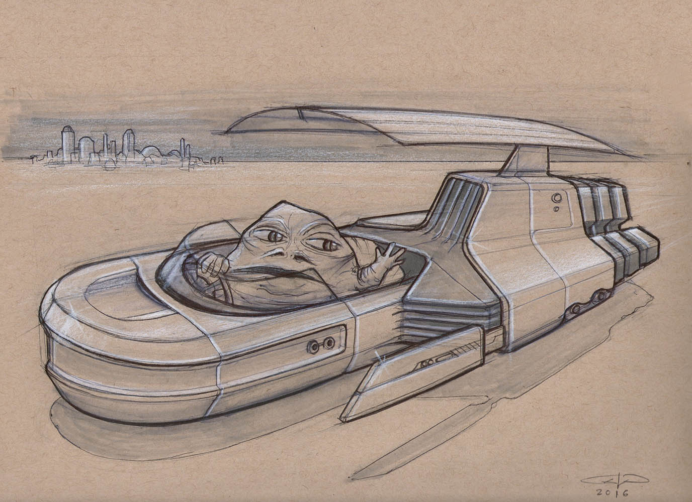
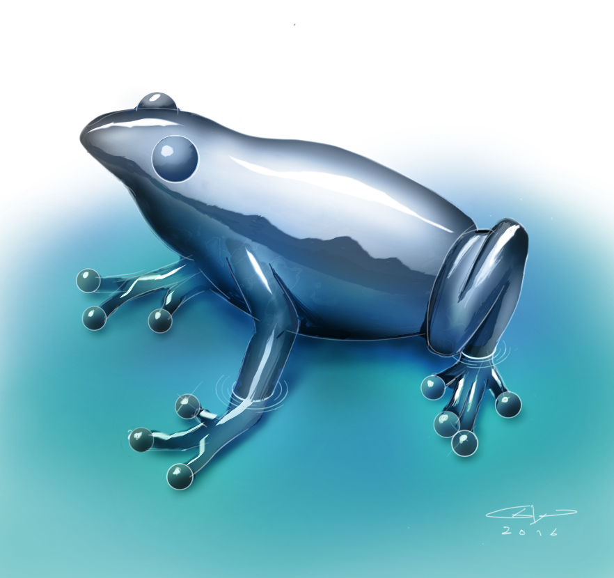
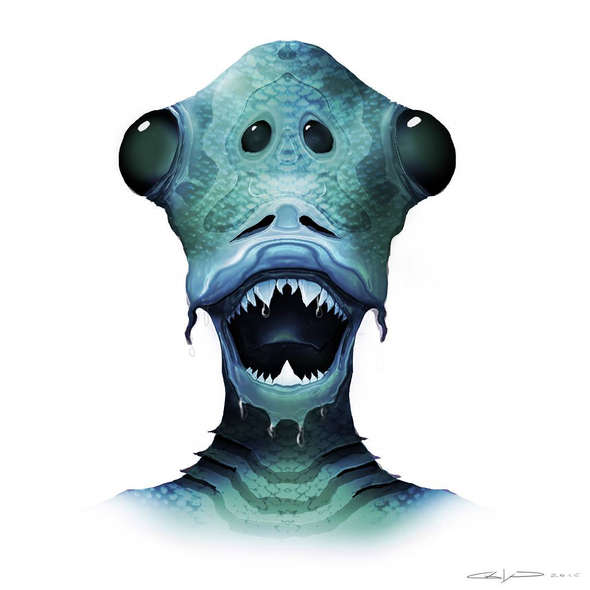
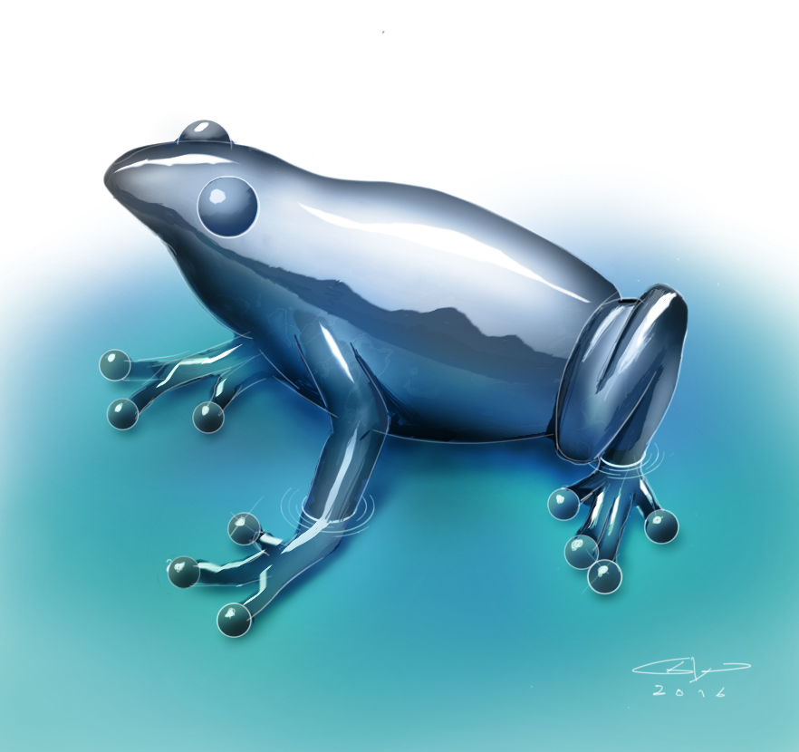
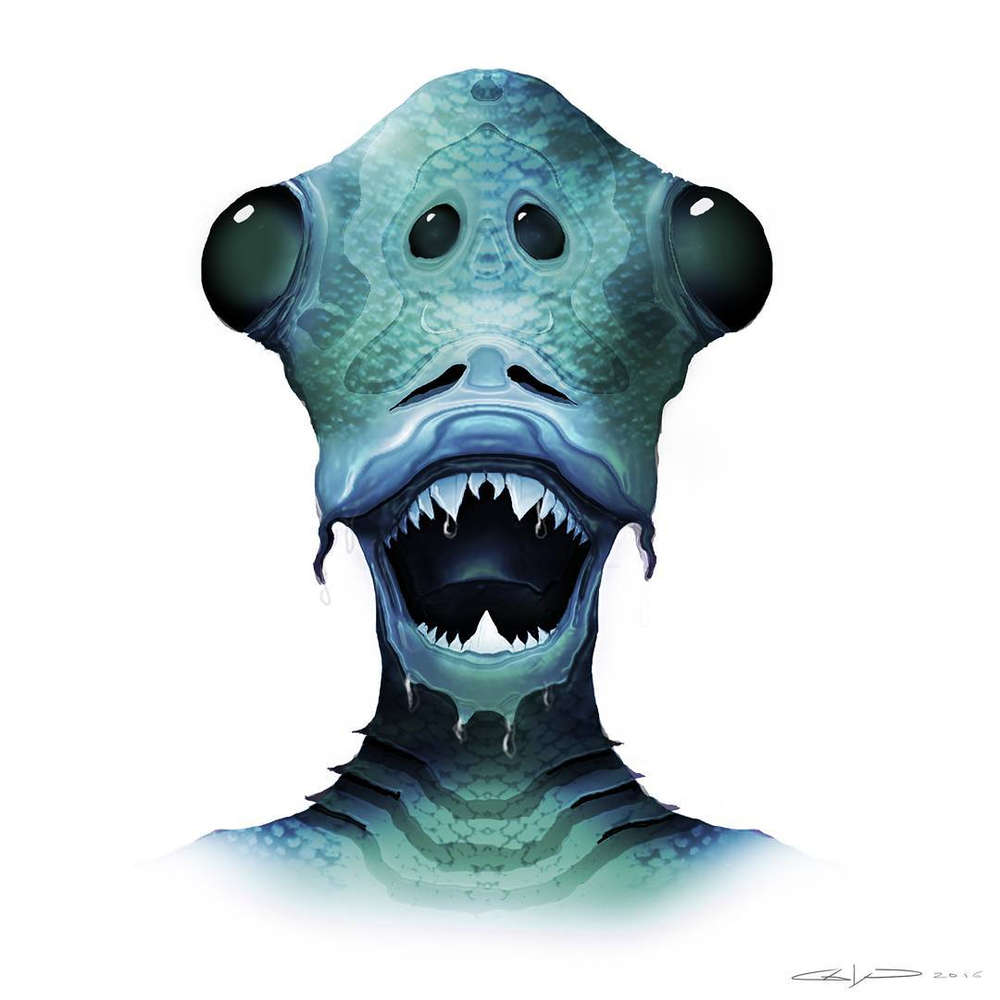

CHI Play 2017 Student Game Competition
CHI 2018
Expressive (SBIM) 2017
Creativity and Cognition 2017 Doctoral Consortium
SketchingDIS: Hand-drawn Sketching in HCI workshop at Designing Interactive Systems Conference (DIS 2017)
TiiS Intelligent Systems Journal Paper (Accepted)
IDCC 2016
Revolutionizing Education with Digital Ink 2016
2015


 


 





I'm a multi-disciplinary creative professional and researcher that's passionate about designing and building interactive experiences that empower people.
My research is at the crossroads of HCI and AI, with applications in educational technology, pen-and-stylus based interfaces, and serious games. I’m passionate about designing and building software that helps people learn, grow, and become more creative. Technology can vastly accelerate learning and empower people to learn at their own pace.
I believe every design requires empathy for the people using it, a balanced perspective in the approach to designing it, and simplicity in its implementation.
When I’m not designing or absorbed in research, I am likely playing music, traveling, or playing video games – A great source of design inspiration.
Freelance UI / UX design, front-end development, branding, and illustration services with 8 years of experience working on projects for more than 30 clients ranging from individuals to startups and mid-sized companies.
Honed skills as a highly effective communicator, leader, and facilitator of consistently successful design solutions.
Research under Dr. Tracy Hammond in the Sketch Recognition Lab is primarily related to intelligent educational software and serious games. I lead the design and development of “SketchTivity” an educational platform for teaching the fundamentals of design sketching and improving creativity in people.
I also provide design and front-end development assistance with an intelligent educational software called "Mechanix" which is for teaching freebody diagrams.
Collaborated on several client projects for the Atlanta studio of this service design firm. Work involved research, interviews, journey mapping, persona creation, sketching, wireframing, prototyping and visual design. Projects included a mortgage buying application for a major financial institution, a report outage experience for a utility company, and a booking experience for a luxury cruiseline.
Assisting sophomore undergrad Industrial Design students in their main studio course. Responsibilities include helping them with research, ideation, giving them constructive feedback, and grading. Using my knowledge and experience to ensure they get in to good habits, break bad habits, and are dedicated to process.
Performed research in the area of advancing spatial reasoning and creative skills in engineers through learning sketching – Specifically by using educational software. Closely related to my Master’s Thesis.
Hybrid UX Designer role in which I designed and prototyped a new profile system concept for StubHub users called “My Hub”.
Worked closely with a Project Manager intern to conceptualize a site-wide personalization framework, with the goal of making StubHub a more personally catered experience for event discovery and planning.
Assisted UX team on several projects related to the responsive redesign of StubHub website by exploring page designs with sketches, wireframes, and prototypes.
Assisted UX team in the design of two responsive websites for national brands during a 3-month contract position with information architecture, wireframes, task-flows, and sitemaps.
Led the design services of this growing digital agency as their first in-house designer.
Rebranded the company and its entire physical and digital presence, leading to a more clear, concise, and cohesive brand identity.
Directed a wide variety of projects for local and national clients involving responsive web design, mobile site/app design, graphic design, and branding during a time in which the company tripled in size.
Supported design team and worked on a variety of commercial LED lighting products. Developed concepts for a family of products for InVue, re-imagining their high-end outdoor lighting brand.